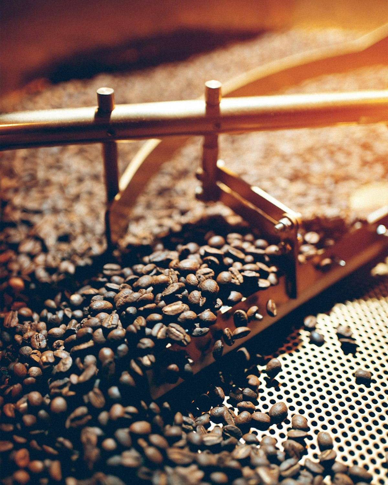

今週の4種類を、浅煎りから順に並べました。
レモンの皮と紅茶のような後味。
100g 900円
焦がした砂糖とナッツの香ばしさ。
100g 850円
りんごの甘酸っぱさと、軽いココアの余韻。
100g 850円
ハーブのような香りと、どっしりした苦味。
100g 950円
焼きたての豆は、網の上で冷まします。

店で飲めるもの
- ブレンド480円
- シングルオリジン600円〜
- カフェオレ580円
- 水出し550円
- ほうじ茶450円
- チーズケーキ520円
- ガトーショコラ550円
焼いた豆は、翌日から店に並びます。
焙煎機は店の奥に1台。火曜と金曜の朝、開店前に焼きます。豆ごとに、投入の量と煎り止めの時間を記録用紙に書いています。
- 投入
- 3kg
- 煎り止め
- 約12分
袋には焼いた日付を押してあります。
豆は100gから量り売りします。
- 100g850円〜
- 200g1,600円〜
挽き方は、豆のまま・中細挽き・細挽きの3つから選べます。袋はクラフト紙、日付の印を押してお渡しします。
豆は店頭のみ。取り置きは店頭か電話でどうぞ。
営業時間と場所
- 営業時間
- 10:00〜18:00
- 定休日
- 水曜
- 住所
- 架空市まめ町1-2-3
- 行き方
- 架空駅の北口から歩いて5分